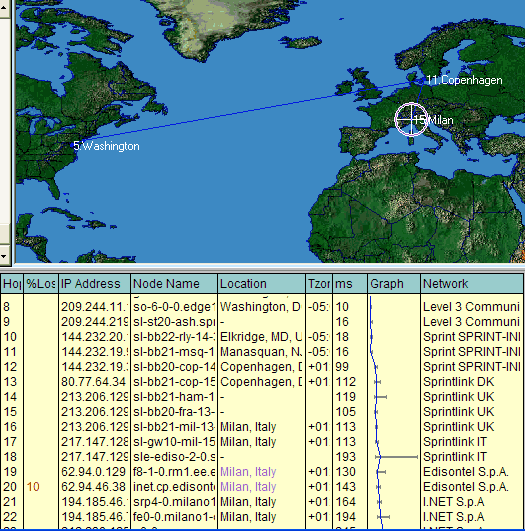
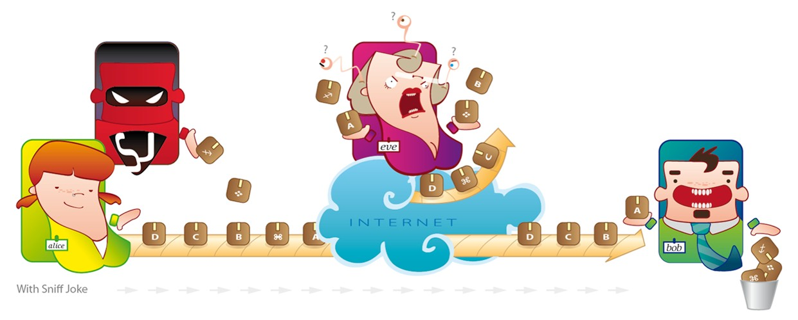

Hello reader. Since you reached these pages you probably know about Internet technology, anyway this graphically cool presentation is for you.
Suppose you are Alice and you want to communicate with Bob, using Internet as medium...

Your data is travelling and one
eavesdropper could
intercept it, record and keep your pieces of information for a
undefinitely time.
Eavesdropping could happen because of a perfecty lawful operation, an unexpected interaction with a hacked system or because of the activity of an evil netadmin. While your data packets are in transit, they cross many countries and networks: Europe and US have different laws about privacy and the policies of the foreign middle Internet Service Provider are unknown to you foreign user. Moreover, your privacy & security ere entrusted to unknow mantainers, procedures and systems by the ISP/Telco.
For example the next image shows a possible route followed by your data sent through the Internet from an ISP in Italy to some other computer in the United States. The chosen route is the most efficent, anyway a lots of private entities manage your data while they move hop by hop.

It is perfectly possibile that someone in those network segements reads and keeps undefinitely those data or alters them. Why? Usually for espionage, marketing,...
Having talked about privacy and security for years, I can tell reactions by people to this fact usually are:
ξ
) "I've nothing to hide, why should I worry about this technical paranoy?"
Answer) These kinds of attacks can be directed against a specific target, but they can also be automatic and massive; the latest option turns everyone into a possibile target, phishing is an example of this situation.
ο
) "This could be a problem for National Security!"
Answer) Luckily, it is easy to protect critical and sensitive networks. This doesn't mean that networks employed in medical/law/politics/military/industry field have always been protected, but the technology makes you able to protect something from interception, e.g. by using
cryptography to defend your communications. This simply means that the problem we are discussing does not represent a problem for National Security, but it represents a real menace for normal users not enough informed about security risks.
π
) "If protection of our communications is so easily achievable, why political debate is trying to legitimate mass interception, censorship and other liberticide-for-fake-security-perception technologies?
Answer) Simply this debate does not try to solve a problem and it just creates new ones.
In short: interception doesn't assure security, but creates insecurity. Everyone could protect himself, if he wants. The only ones think they don't need to protect themselves are the people that don't know how Internet works. Cryptography is the solution, but cryptography requires to be supported on both endpoints of transmission. Users could adopt SniffJoke as a funny but effective alternative to protect themselves in communications with computers that do not provide security features like traffic encryption:

SniffJoke is a software able to inject in your TCP connections some packets. Those packets could:
(α) be so weird that the remote Operating System discarges them, the sniffer probably not and misinterprets them.
(β) be valid, but the remote OS ignores them because of its current TCP state, the sniffer probabily not and misinterprets them.
(γ) be valid, but expire before reaching the remote OS, instead the sniffer receives them and take them into consideration.
As a result, Eve (the sniffer, the eavesdropper) usually fails to manage the session tracking.
WARNING: SniffJoke does not avoid sniffers, human traffic analysis and all the damage derived from unlawful interceptions.
SniffJoke is not a Sniffer Evasion tool, but a 'connection scrambler', in fact that is its unique effective description.
Alice is virtually you, the SniffJoke user. The current version (0.3) of SniffJoke is supported only under Linux. The 1.0 probability will run on MacOSX too. SniffJoke requirement is an Operating System with TUN capabilities. In short, SniffJoke creates a new local default gateway with a tun device, where all outgoing packets are received. SniffJoke tracks the TCP connections status and injects packets inside them. The packets are forged for the original gateway MAC address. Detection of network environment and execution of the commands are embedded in the SniffJoke code. SniffJoke provides for administration pourposes a local web page, locate by default at http://127.0.0.1:8844.

Bob is the funny guy on the other side of the connection, in another country and with limited OS capabilities. He does not have to do nothing, his Operating Sysyem discards the packets injected by SniffJoke and he can receive and serve your data as a normal remote host.
Warning: no malfuctions have been detected in the remote system, like Denial Of Service or premature closing of connections, anyway, these anomalies may happen. Mail me at [vecna at delirandom dot net] to report any unexpected behaviour of SniffJoke.
SniffJoke, in version 0.3, applies the TCP hacks only in the session started from the box where SniffJoke is running on, not on the sessions directed to the box. In short: it works only for client connections, not for server ones. A future extension involves statistics and TCP ports selection. I'm looking for someone working with me on SniffJoke project, I need to follow other things and those improvement require efforts that I am sure I could not support with my limited time.
 SniffJoke is the software implementig connection scrambler technology. Sometimes this technique has been called 'sniffer evasion', but in fact it does not avoid sniffing, but simple confuses automatical reconstruction of connection flow. The first homo sapiens sapiens hacking this way was horizon, in Phrack 54-10 Defeating Sniffers and Intrusion Detection Systems [θ], and also Thomas H. Ptacek, Timothy N. Newsham, Homer J. Simpson (umh, Homer J. Simpson !?) in Insertion, evasion, and denial of service: Eluding network intrusion detection (1998) [ι].
SniffJoke is the software implementig connection scrambler technology. Sometimes this technique has been called 'sniffer evasion', but in fact it does not avoid sniffing, but simple confuses automatical reconstruction of connection flow. The first homo sapiens sapiens hacking this way was horizon, in Phrack 54-10 Defeating Sniffers and Intrusion Detection Systems [θ], and also Thomas H. Ptacek, Timothy N. Newsham, Homer J. Simpson (umh, Homer J. Simpson !?) in Insertion, evasion, and denial of service: Eluding network intrusion detection (1998) [ι].
The basic techniques are expained in the citated papers, here follows some cut/paste:
[θ] Several sniffers are designed to follow connections, and ignore everything else until those connections are closed or reaches some internal time out. Sniffers designed in this fashion have a very low profile, as far as memory usage and CPU time. However, they obviously miss a great deal of the data that can be obtained. This gives us an easy way of preventing our packets from being captured: before our connection, we send a spoofed SYN packet from a non-existent host to the same port that we are attempting to connect to. Thus, the sniffer sees the SYN packet, and if it is listening, it will set up its internal state to monitor all packets related to that connection. Then, when we make our connection, the sniffer ignores our SYN because it is watching the fake host. When the host later times out, our connection will not be logged because our initial SYN packet has long been sent.
[ι] All currently available network intrusion detection systems (IDS) rely upon a mechanism of data collection (passive protocol analysis) which is fundamentally flawed:
The first, There isn't enough information on the wire on which to base conclusions about what is actually happening on networked machines.
The second: The fact that the system is passive makes it inherently fail-open meaning that a compromise in the availability of the IDS doesn't compromise the availability of the network.
We define three classes of attacks which exploit these fundamental problems 'insertion, evasion, and denial of service attacks' and describe how to apply these three types of attacks to IP and TCP protocol analysis.
This indicates that network ID systems cannot be fully trusted until they are fundamentally redesigned.
SniffJoke assumptions and points of view:
(κ) SniffJoke fools automatic reconstruction of sessions, a human doing traffic analysis could simply discriminate between real packets and injected invalid packets.
(λ) A professional/huge sniffer used to intercept the victim, if not located on the source/destination LAN, must be able to analyze large amounts of traffic. This performance requirement means that the sniffer could not implement a full compatible TCP stack. However even in the case a full compatible TCP stack could be implemented, then internal coherence could not be checked run-time. I have never tested SniffJoke against something like
Narus, but theory supports me.
(μ) I do not care about, not even think, SniffJoke could have some impact in IDS and attack detection engines. In fact those system, implemented near the protected LAN, are able to analyze the meaning of the packets without the requirement of connection reassembly. Remember: SniffJoke is not a sniffer evasion tool, it is better described as a
connection scrambler.
(ν) I am trying to attack the 'fake sense of security' given by the undiscriminated communication control. In a world with cross countries laws and open source technology, the control of Internet communications brings to control only the innocent and common people, while anybody else could protect himself also extending his privacy right. This motivation alone is enough for SniffJoke to exist. In a closed technology network owned by the state, the citizen could not protect himself but neither he should feel any fear, because in so-called-democracy the citizen is the state. Internet is global and some networks could be run by unethical ISPs and corrupted managers, so SniffJoke impacts is like the one of the cryptography: it is a demonstration of a technology that provides freedom in our communications (sometimes this freedom is achieved by using RSA, other times doing TCP injection :).
Are corporate sniffers closed source? Obviously yes they are, but if someone will send me a report, I would be happy to update the table in Eve section.
This software has not the focus to live forever, it could work for a few months, years at the most. It is a simple software to
remember.
Remember that Internet is not in the hands of public agencies and institutions, but in the ones of corporations, ISPs and free lance administrators.
This is not a problem, it is the reason why Internet CAN exist, and no other way could be possibile, at least in a global scale. Until the communication network is headed by State controlled industries, democracy assures privacy and safety, because the only entity able to read communications is the keeper of the closed technology (the State).
In Internet the tecnologies are open, everyone searching for protecton can get it, and cannot be avoided. The more you are able to pay, the better you are protected. If
controlling the network is presented as the solution to prevent crimes, sorry but this is a false and non working solution. This is just an easy way to fuck technically ignorant people. Internet cannot be changed in its very nature. I suggest to read:
EPIC and
EFF. SniffJoke aims to show another side of this discrepance between the Old and the New. Security must be obtained in other ways, sorry!
Alice/Bob/SniffHeroJoke/Eve/Internet Images are under Creative Commons license and are made by the dearest cutiest funniest graphic designer in the world, also know as ShinySushi, and is the only reason because the link of this page is spreaded in the network :P
If someone wants to port SniffJoke on MacOSX, to create a .deb/.rpm package or to modify the code, documentation or other, feel free to mail me
vecna+delirandom.net.
GPG key
0x602EEFA5, check your
path.
{kind=link}